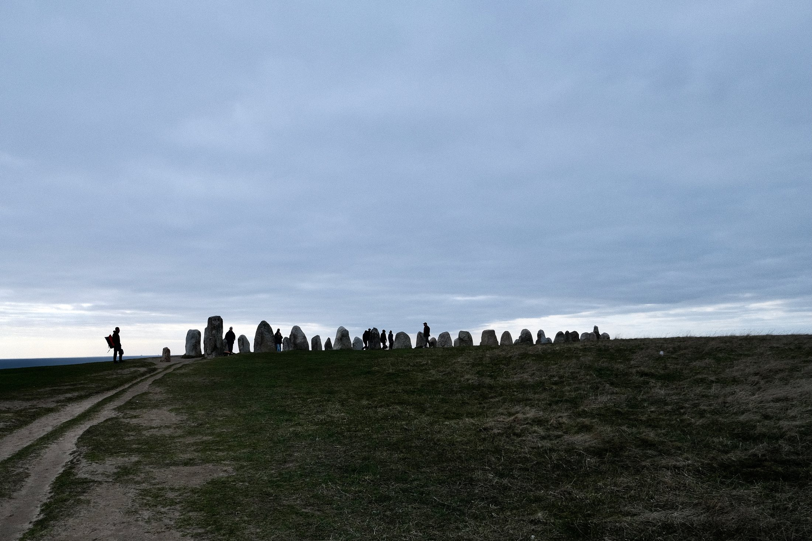
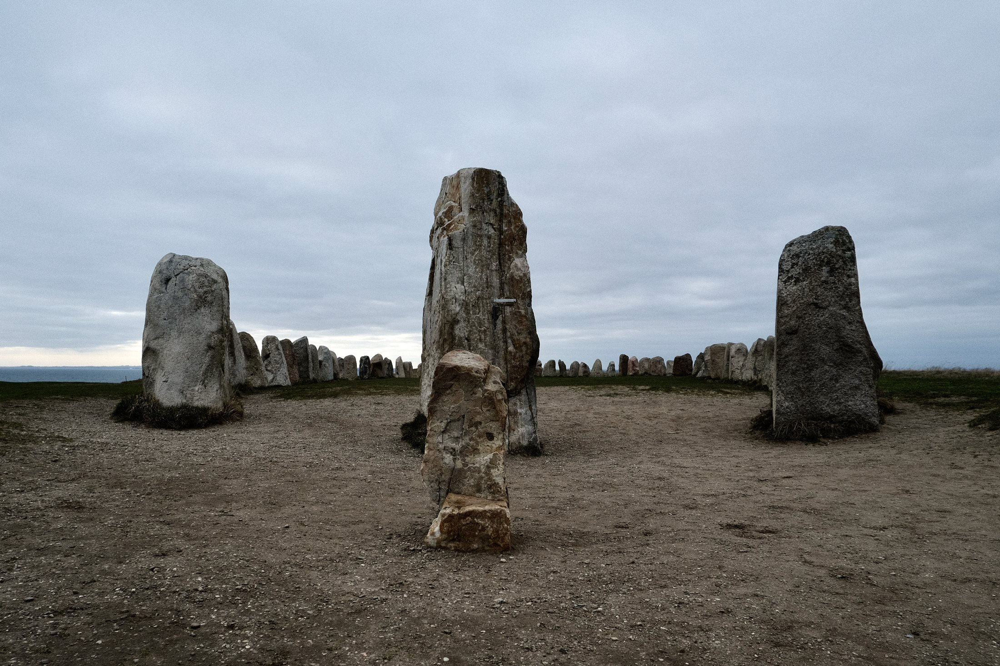
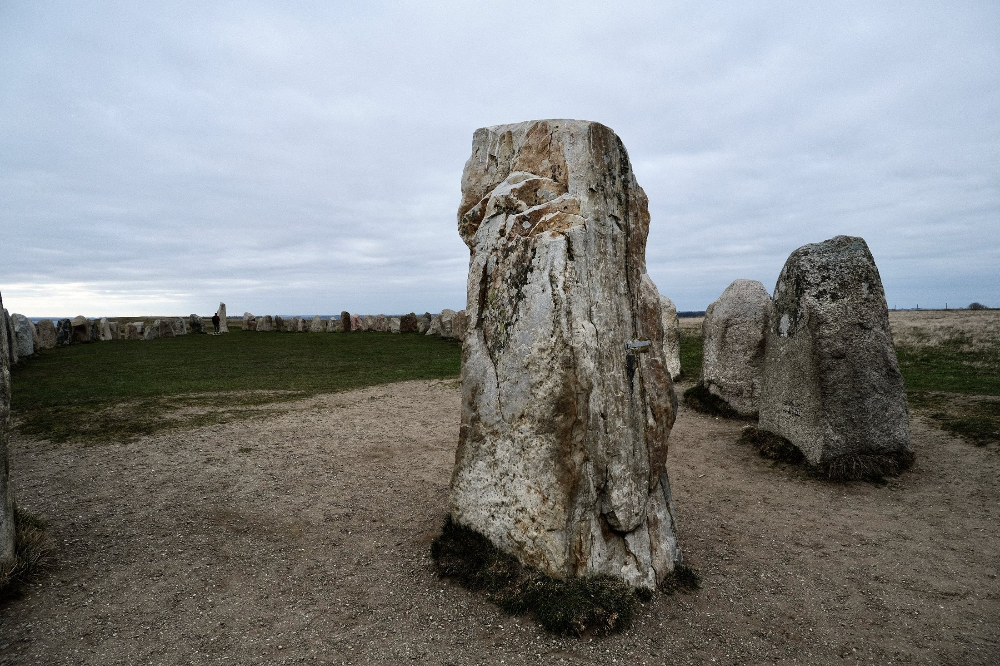

Ales Stenar sits on a headland above Kåseberga, and the climb up from the harbour is steep enough that you arrive slightly out of breath, which turns out to be the right way to meet it. Fifty-nine boulders, the heaviest around five tonnes, set in the outline of a ship sixty-seven metres long. The stones at bow and stern are noticeably taller than the rest.

From below it reads as a line of teeth along the ridge. There is nothing built on the site — no railing, no laid path through the middle, no interpretation boards between you and the stones. Just grass, the boulders, and the drop to the sea beyond. The wind does most of the work of making the place feel serious.

A ship made of stone
Radiocarbon puts it at roughly 1,400 years old — the end of the Nordic Iron Age, somewhere between 540 and 650. Six of seven samples agree on that. The seventh came back at around 5,500 years, and that single outlier has been enough to keep the argument running. What the ship was for is still open: a grave monument, a cult site, or the theory that reliably makes the newspapers, a calendar aligned to the solstices.

Standing inside the outline, the disagreement stops feeling academic. The stones are not uniform. Some are pale and almost squared, others dark, rough, leaning off true. Each was chosen and set at a particular height, and from within the effect is a rhythm rather than a wall. That is an enormous amount of deliberate work for a monument nobody can now read.
Ales Stenar is not loud. Its presence comes from stone, distance, wind, and the long memory of the coast.
I left thinking the ambiguity is the honest part of the place. Something this exposed, this carefully built, and this completely undocumented tells you something true about the Iron Age: they were not building it for us, and they left no instructions.